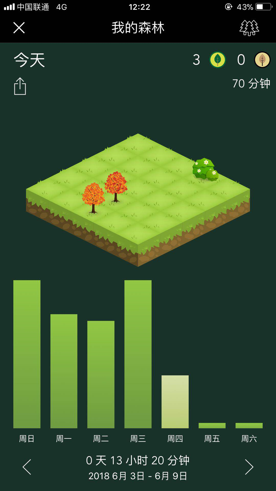
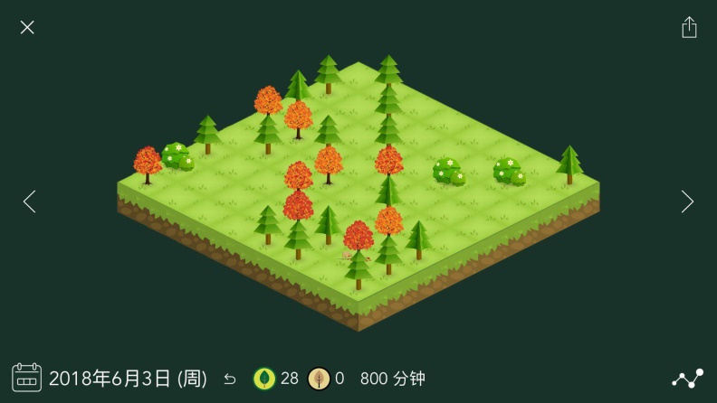

（一）种树功能
种树是软件的最基本的功能，也是打开应用可以直接看到并使用的功能。
Forest在中心放置一个圆形图标内置一个可以选择的种植树木的图片，在圆形的圆环上有一个可以拖动的按钮，通过顺时针拖动按钮在圆上的位置，便可以设置所需要的种植树木时间。最低可设置时间为10分钟，最高可设置时间为120分钟。
其中，在拖动按钮的过程中，圆中心的植物会随设置的时间慢慢变成大树。
（二）查看种树情况功能

在“我的森林”中可以看到，今天以及这周的种植树木的情况（即专注学习的时间情况）会以树木＋图表+数字的形式展现。
而在右上角的森林图标可以选择看到周、月、年的种植情况以及总的专注时间：

当然这些也是可以分享给朋友的。Forest巧妙的使用查看森林中种植树木的情况和条形图相结合的直觉体验，来让用户既可以直接了当的看到自己的每天的专注时间，又可以查看自己种植树木的成就感体现，与人的责任感和成就感的结合，大大地增加了用户对产品的兴趣程度以及用户的粘性。
（三）时间历程以及标签功能
“时间历程”的功能，让用户很清楚的了解自己使用产品的过程，解锁的成就和打开屏幕的次数，可以说用户在查看自己的“时间历程”过程中，也在慢慢的发现自己脱离依赖手机的过程，自己在一步一步地治疗着手机成瘾症，发现自己正在慢慢的改变当中，给用户带了一份别样的成长历程体验的结果，会对自己有一些慰藉。
而“手机使用记录”功能，能很好的让用户观察到自己在什么时间段使用了手机，清楚了解自己对手机的使用情况。